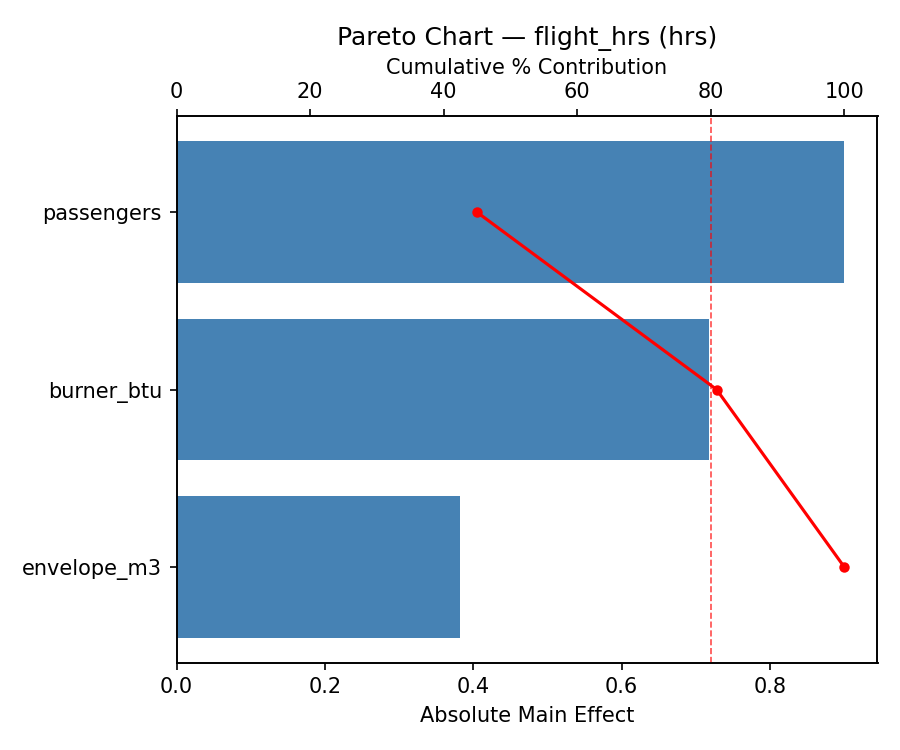
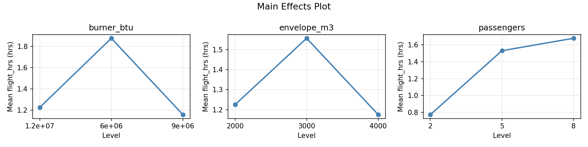
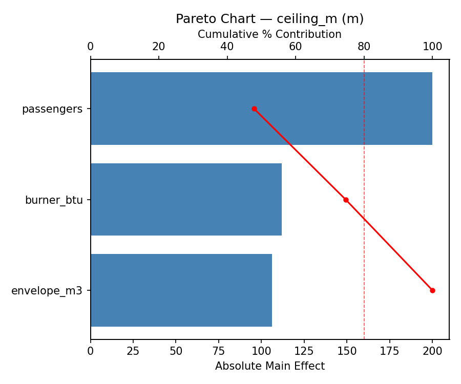
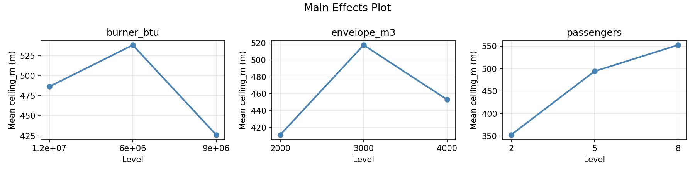
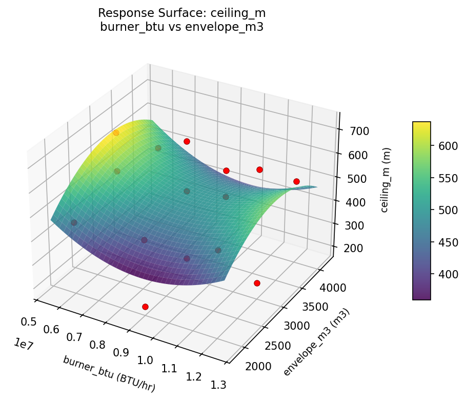
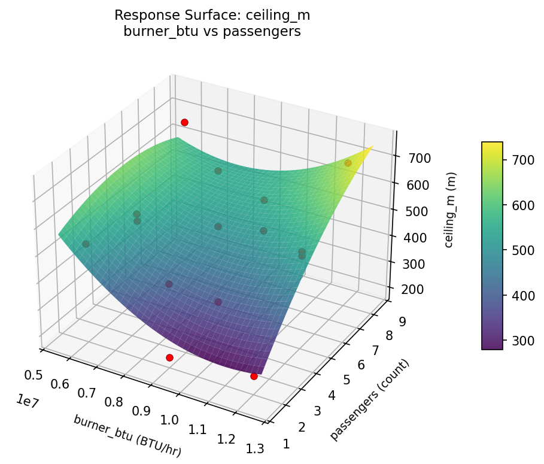
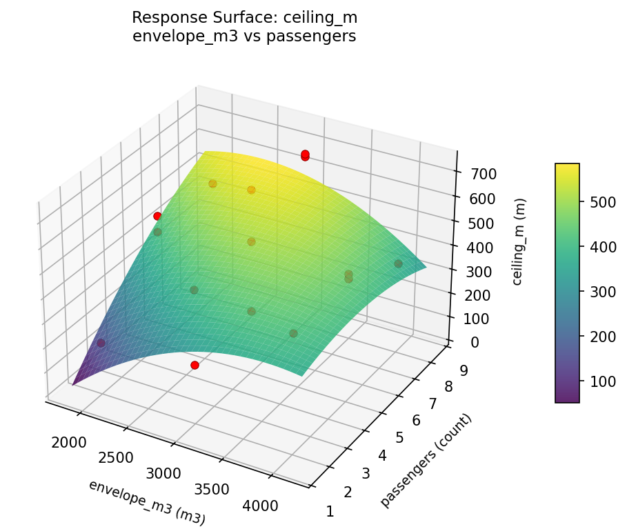
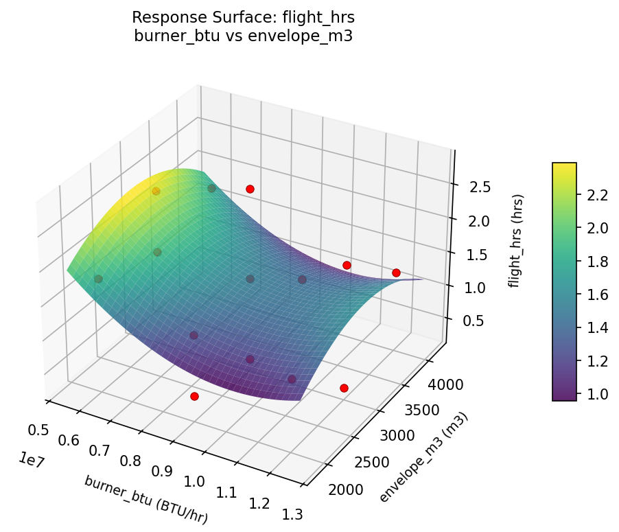
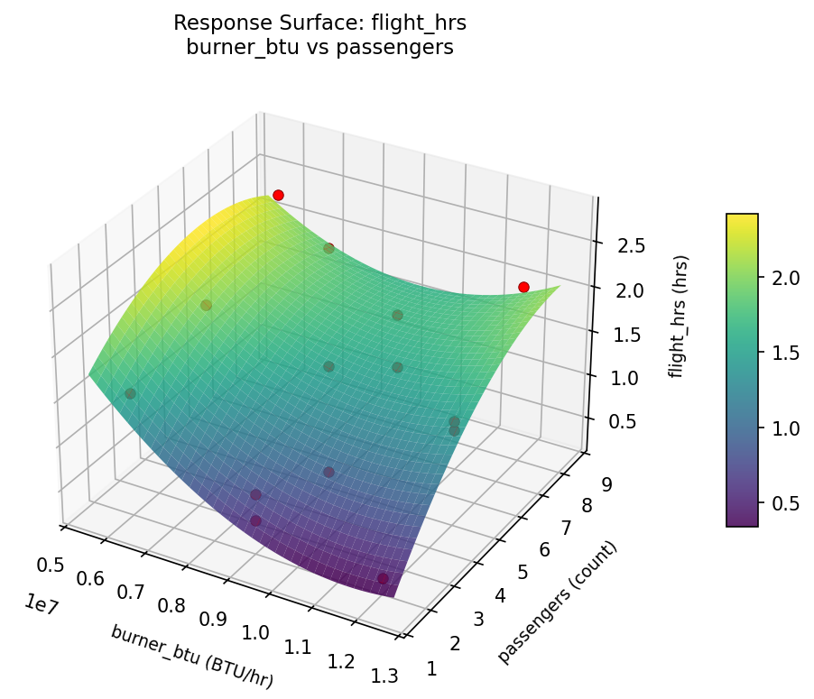
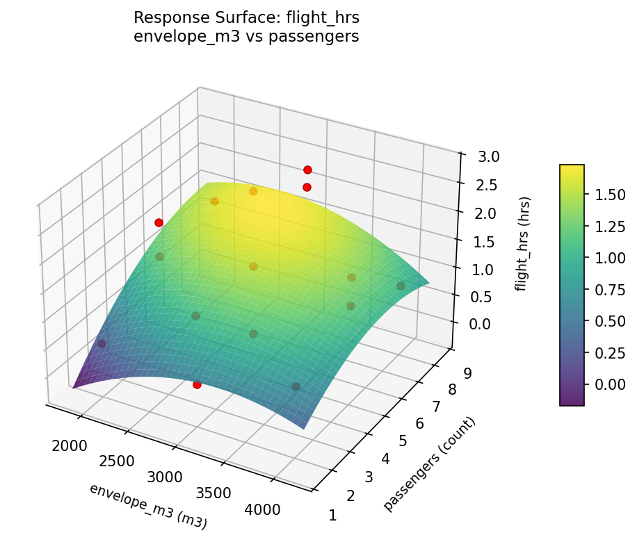

Summary
This experiment investigates hot air balloon flight planning. Box-Behnken design to maximize flight duration and altitude ceiling by tuning burner output, envelope volume, and passenger count.
The design varies 3 factors: burner btu (BTU/hr), ranging from 6000000 to 12000000, envelope m3 (m3), ranging from 2000 to 4000, and passengers (count), ranging from 2 to 8. The goal is to optimize 2 responses: flight hrs (hrs) (maximize) and ceiling m (m) (maximize). Fixed conditions held constant across all runs include fuel kg = 100, ambient temp = 15C.
A Box-Behnken design was chosen because it efficiently fits quadratic models with 3 continuous factors while avoiding extreme corner combinations — requiring only 15 runs instead of the 8 needed for a full factorial at two levels.
Quadratic response surface models were fitted to capture potential curvature and factor interactions. The RSM contour plots below visualize how pairs of factors jointly affect each response.
Key Findings
For flight hrs, the most influential factors were passengers (45.0%), burner btu (35.9%), envelope m3 (19.1%). The best observed value was 2.8 (at burner btu = 9e+06, envelope m3 = 3000, passengers = 5).
For ceiling m, the most influential factors were passengers (47.8%), burner btu (26.8%), envelope m3 (25.4%). The best observed value was 729.0 (at burner btu = 9e+06, envelope m3 = 3000, passengers = 5).
Recommended Next Steps
- Run confirmation experiments at the predicted optimal settings to validate the model.
- Consider whether any fixed factors should be varied in a future study.
Experimental Setup
Factors
| Factor | Low | High | Unit |
|---|
burner_btu | 6000000 | 12000000 | BTU/hr |
envelope_m3 | 2000 | 4000 | m3 |
passengers | 2 | 8 | count |
Fixed: fuel_kg = 100, ambient_temp = 15C
Responses
| Response | Direction | Unit |
|---|
flight_hrs | ↑ maximize | hrs |
ceiling_m | ↑ maximize | m |
Configuration
{
"metadata": {
"name": "Hot Air Balloon Flight Planning",
"description": "Box-Behnken design to maximize flight duration and altitude ceiling by tuning burner output, envelope volume, and passenger count"
},
"factors": [
{
"name": "burner_btu",
"levels": [
"6000000",
"12000000"
],
"type": "continuous",
"unit": "BTU/hr"
},
{
"name": "envelope_m3",
"levels": [
"2000",
"4000"
],
"type": "continuous",
"unit": "m3"
},
{
"name": "passengers",
"levels": [
"2",
"8"
],
"type": "continuous",
"unit": "count"
}
],
"fixed_factors": {
"fuel_kg": "100",
"ambient_temp": "15C"
},
"responses": [
{
"name": "flight_hrs",
"optimize": "maximize",
"unit": "hrs"
},
{
"name": "ceiling_m",
"optimize": "maximize",
"unit": "m"
}
],
"settings": {
"operation": "box_behnken",
"test_script": "use_cases/270_hot_air_balloon/sim.sh"
}
}
Experimental Matrix
The Box-Behnken Design produces 15 runs. Each row is one experiment with specific factor settings.
| Run | burner_btu | envelope_m3 | passengers |
|---|
| 1 | 9e+06 | 2000 | 2 |
| 2 | 9e+06 | 3000 | 5 |
| 3 | 1.2e+07 | 3000 | 8 |
| 4 | 1.2e+07 | 3000 | 2 |
| 5 | 9e+06 | 3000 | 5 |
| 6 | 9e+06 | 3000 | 5 |
| 7 | 6e+06 | 3000 | 8 |
| 8 | 1.2e+07 | 2000 | 5 |
| 9 | 9e+06 | 2000 | 8 |
| 10 | 1.2e+07 | 4000 | 5 |
| 11 | 6e+06 | 3000 | 2 |
| 12 | 9e+06 | 4000 | 8 |
| 13 | 6e+06 | 2000 | 5 |
| 14 | 6e+06 | 4000 | 5 |
| 15 | 9e+06 | 4000 | 2 |
Step-by-Step Workflow
1
Preview the design
$ python doe.py info --config use_cases/270_hot_air_balloon/config.json
2
Generate the runner script
$ python doe.py generate --config use_cases/270_hot_air_balloon/config.json \
--output use_cases/270_hot_air_balloon/results/run.sh --seed 42
3
Execute the experiments
$ bash use_cases/270_hot_air_balloon/results/run.sh
4
Analyze results
$ python doe.py analyze --config use_cases/270_hot_air_balloon/config.json
5
Get optimization recommendations
$ python doe.py optimize --config use_cases/270_hot_air_balloon/config.json
6
Generate the HTML report
$ python doe.py report --config use_cases/270_hot_air_balloon/config.json \
--output use_cases/270_hot_air_balloon/results/report.html
Features Exercised
| Feature | Value |
|---|
| Design type | box_behnken |
| Factor types | continuous (all 3) |
| Arg style | double-dash |
| Responses | 2 (flight_hrs ↑, ceiling_m ↑) |
| Total runs | 15 |
Analysis Results
Generated from actual experiment runs using the DOE Helper Tool.
Response: flight_hrs
Top factors: passengers (45.0%), burner_btu (35.9%), envelope_m3 (19.1%).
Pareto Chart

Main Effects Plot

Response: ceiling_m
Top factors: passengers (47.8%), burner_btu (26.8%), envelope_m3 (25.4%).
Pareto Chart

Main Effects Plot

Response Surface Plots
3D surfaces fitted with quadratic RSM. Red dots are observed data points.
ceiling m burner btu vs envelope m3

ceiling m burner btu vs passengers

ceiling m envelope m3 vs passengers

flight hrs burner btu vs envelope m3

flight hrs burner btu vs passengers

flight hrs envelope m3 vs passengers

Full Analysis Output
RSM surface: rsm_flight_hrs_burner_btu_vs_envelope_m3.png
RSM surface: rsm_flight_hrs_burner_btu_vs_passengers.png
RSM surface: rsm_flight_hrs_envelope_m3_vs_passengers.png
RSM surface: rsm_ceiling_m_burner_btu_vs_envelope_m3.png
RSM surface: rsm_ceiling_m_burner_btu_vs_passengers.png
RSM surface: rsm_ceiling_m_envelope_m3_vs_passengers.png
=== Main Effects: flight_hrs ===
Factor Effect Std Error % Contribution
--------------------------------------------------------------
passengers 0.9000 0.1924 45.0%
burner_btu 0.7179 0.1924 35.9%
envelope_m3 0.3821 0.1924 19.1%
=== Summary Statistics: flight_hrs ===
burner_btu:
Level N Mean Std Min Max
------------------------------------------------------------
1.2e+07 4 1.2250 0.7365 0.3000 2.1000
6e+06 4 1.8750 0.3775 1.5000 2.4000
9e+06 7 1.1571 0.8463 0.3000 2.8000
envelope_m3:
Level N Mean Std Min Max
------------------------------------------------------------
2000 4 1.2250 0.5439 0.5000 1.8000
3000 7 1.5571 0.9761 0.3000 2.8000
4000 4 1.1750 0.4787 0.8000 1.8000
passengers:
Level N Mean Std Min Max
------------------------------------------------------------
2 4 0.7750 0.5252 0.3000 1.5000
5 7 1.5286 0.7566 0.3000 2.8000
8 4 1.6750 0.7182 0.8000 2.4000
=== Main Effects: ceiling_m ===
Factor Effect Std Error % Contribution
--------------------------------------------------------------
passengers 200.0000 42.4437 47.8%
burner_btu 111.9643 42.4437 26.8%
envelope_m3 106.2143 42.4437 25.4%
=== Summary Statistics: ceiling_m ===
burner_btu:
Level N Mean Std Min Max
------------------------------------------------------------
1.2e+07 4 486.5000 195.2170 224.0000 696.0000
6e+06 4 538.2500 102.3763 457.0000 686.0000
9e+06 7 426.2857 182.3510 194.0000 729.0000
envelope_m3:
Level N Mean Std Min Max
------------------------------------------------------------
2000 4 411.5000 147.5048 194.0000 521.0000
3000 7 517.7143 211.6615 224.0000 729.0000
4000 4 453.2500 67.2229 355.0000 505.0000
passengers:
Level N Mean Std Min Max
------------------------------------------------------------
2 4 352.7500 168.0583 194.0000 525.0000
5 7 494.4286 143.4746 239.0000 729.0000
8 4 552.7500 166.9159 355.0000 696.0000
Pareto chart (flight_hrs): use_cases/270_hot_air_balloon/results/analysis/pareto_flight_hrs.png
Pareto chart (ceiling_m): use_cases/270_hot_air_balloon/results/analysis/pareto_ceiling_m.png
Main effects (flight_hrs): use_cases/270_hot_air_balloon/results/analysis/main_effects_flight_hrs.png
Main effects (ceiling_m): use_cases/270_hot_air_balloon/results/analysis/main_effects_ceiling_m.png
Optimization Recommendations
=== Optimization: flight_hrs ===
Direction: maximize
Best observed run: #15
burner_btu = 9e+06
envelope_m3 = 3000
passengers = 5
Value: 2.8
RSM Model (linear, R² = 0.0640, Adj R² = -0.1913):
Coefficients:
intercept +1.3667
burner_btu +0.2125
envelope_m3 -0.0375
passengers +0.1250
RSM Model (quadratic, R² = 0.5769, Adj R² = -0.1848):
Coefficients:
intercept +2.2333
burner_btu +0.2125
envelope_m3 -0.0375
passengers +0.1250
burner_btu*envelope_m3 -0.1000
burner_btu*passengers +0.1750
envelope_m3*passengers +0.4750
burner_btu^2 -0.4167
envelope_m3^2 -0.5667
passengers^2 -0.6417
Curvature analysis:
passengers coef=-0.6417 concave (has a maximum)
envelope_m3 coef=-0.5667 concave (has a maximum)
burner_btu coef=-0.4167 concave (has a maximum)
Notable interactions:
envelope_m3*passengers coef=+0.4750 (synergistic)
Predicted optimum (from quadratic model):
burner_btu = 9e+06
envelope_m3 = 3000
passengers = 5
Predicted value: 2.2333
Model quality: Moderate fit — use predictions directionally, not precisely.
Factor importance:
1. passengers (effect: 0.7, contribution: 39.4%)
2. burner_btu (effect: 0.5, contribution: 30.7%)
3. envelope_m3 (effect: 0.5, contribution: 29.9%)
=== Optimization: ceiling_m ===
Direction: maximize
Best observed run: #15
burner_btu = 9e+06
envelope_m3 = 3000
passengers = 5
Value: 729.0
RSM Model (linear, R² = 0.0551, Adj R² = -0.2026):
Coefficients:
intercept +472.2000
burner_btu +25.5000
envelope_m3 -36.8750
passengers +24.3750
RSM Model (quadratic, R² = 0.4997, Adj R² = -0.4007):
Coefficients:
intercept +627.3333
burner_btu +25.5000
envelope_m3 -36.8750
passengers +24.3750
burner_btu*envelope_m3 +17.0000
burner_btu*passengers +65.0000
envelope_m3*passengers +106.7500
burner_btu^2 -59.7917
envelope_m3^2 -88.0417
passengers^2 -143.0417
Curvature analysis:
passengers coef=-143.0417 concave (has a maximum)
envelope_m3 coef=-88.0417 concave (has a maximum)
burner_btu coef=-59.7917 concave (has a maximum)
Notable interactions:
envelope_m3*passengers coef=+106.7500 (synergistic)
burner_btu*passengers coef=+65.0000 (synergistic)
burner_btu*envelope_m3 coef=+17.0000 (synergistic)
Predicted optimum (from linear model):
burner_btu = 1.2e+07
envelope_m3 = 2000
passengers = 5
Predicted value: 534.5750
Model quality: Weak fit — consider adding center points or using a different design.
Factor importance:
1. passengers (effect: 156.9, contribution: 46.7%)
2. envelope_m3 (effect: 110.4, contribution: 32.9%)
3. burner_btu (effect: 68.8, contribution: 20.5%)